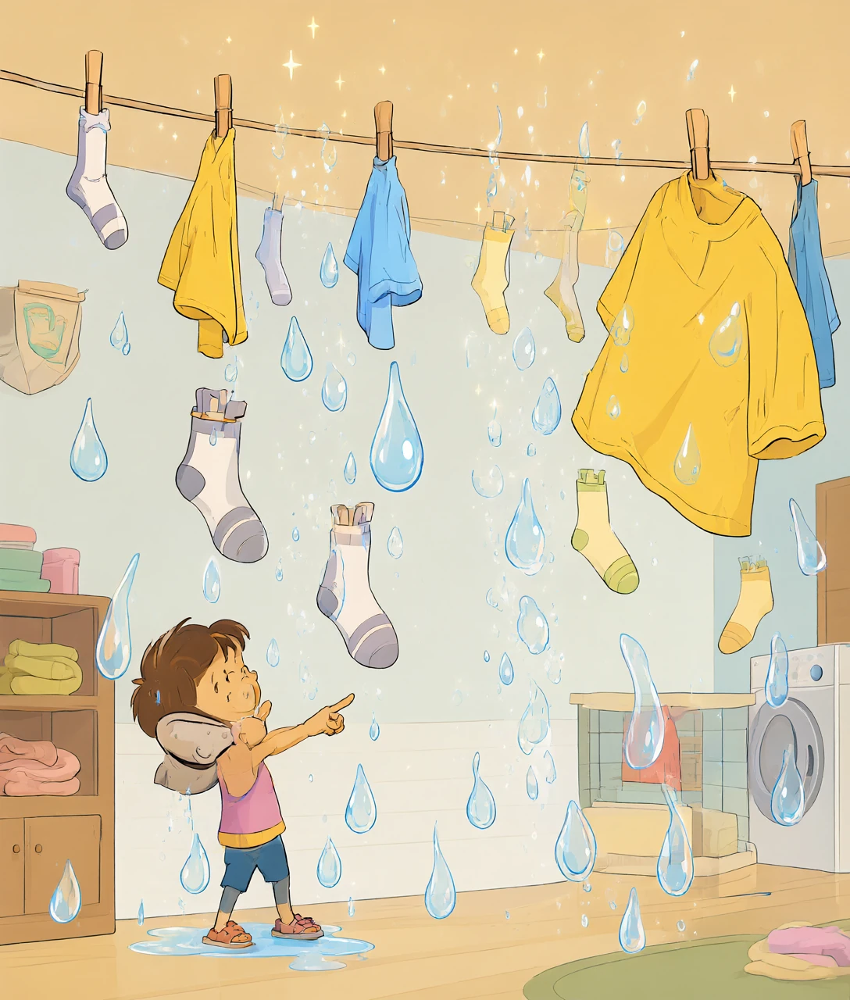
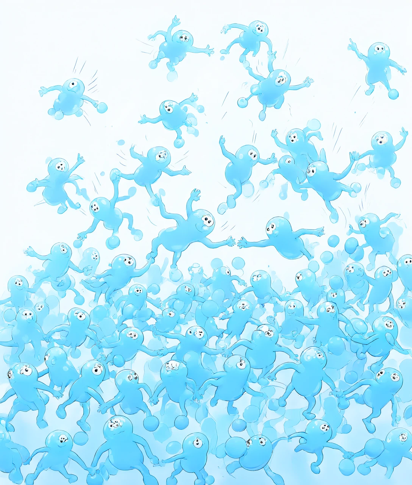
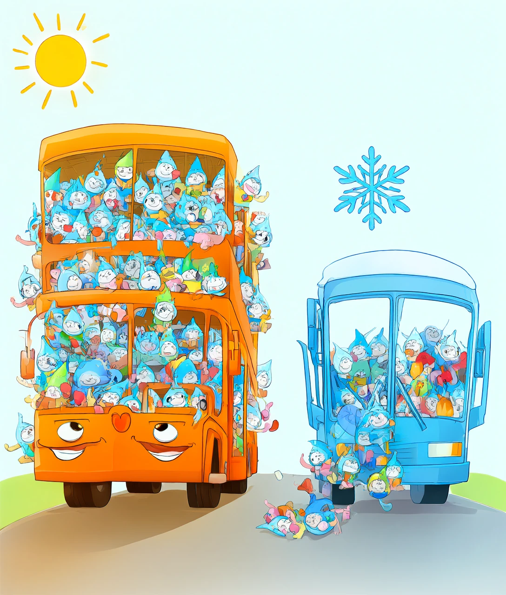
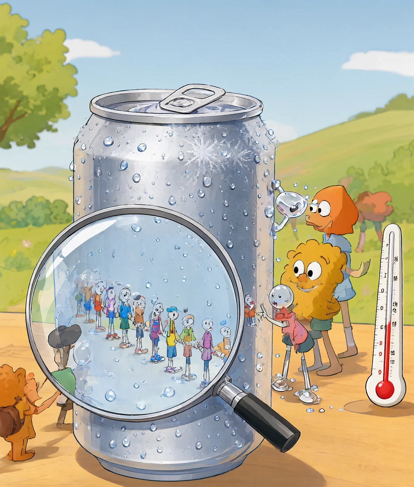
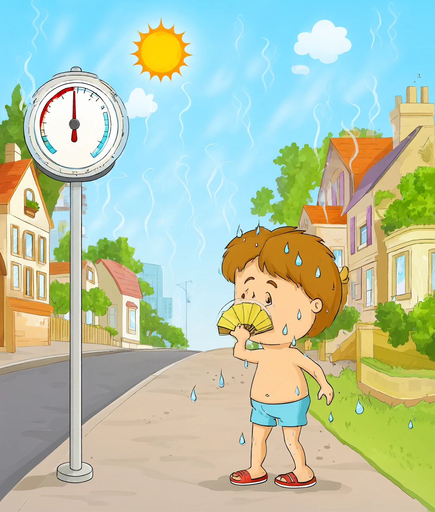

一间屋子上空飘着一杯看不见的水，以及它什么时候肯「现形」
洗好的袜子晾在屋里，第二天干了。水明明没有倒掉，也没人喝掉，它去哪了？
答案是：它变成看不见的水汽，混进了空气里。也就是说——空气里真的有水。而且此刻你房间上空飘着的水，可能比一瓶矿泉水还多。可既然有水，为什么我们看不见？往下看。

先分清两个东西：水蒸气（水汽）和小水滴。
水汽是一个一个单独的水分子——水这种东西最小的零件。一个水分子大约只有 0.0000000004 米宽，比细菌还要小一万倍。这么小的东西，光根本「撞」不到一个能弹回你眼睛的目标上，所以眼睛看不见它。
那开水壶口冒出的「白气」呢？那不是水汽！那是水汽冲出来遇冷，已经抱团变成的小水滴——几百万个小水滴聚在一起，才看得见。真正的水汽是隐形的，它就在白气周围你看不见的地方。
对着冷一点的镜子或眼镜片哈一口气，立刻出现一层雾——那不是你「喷」出来的水，是你呼出的水汽碰上冷镜片，紧急抱团变成了小水滴。水汽真的一路跟着你。
袜子上的水为什么会自己跑掉？得钻到水分子中间看。
液态的水，分子们手拉手挤在一起（这种「分子之间的手」叫氢键，是水分子特别爱交朋友的性格）。但分子不是乖孩子——它们永远在乱跑，而且跑得有快有慢。
总有那么一些分子，恰好跑得特别快，快到挣脱了旁边分子的手，一蹬腿冲出水面，飞进空气——这就是蒸发。哪怕一杯冷水，表面也每秒都有亿万个小分子在偷偷逃跑。
反过来，空气里乱飞的水汽分子也会撞回水面，被「拉」住手重新归队——这叫凝结。所以水面永远在进行一场交换游戏：一边往外跑，一边往回抓。晾衣服是跑出去的多、抓回来的少；罩上塑料袋，抓回来的追上跑出去的，衣服就干不了。

温度就是分子乱跑的勐烈程度。太阳把水晒热，分子跑得更快、更有劲挣脱——跑出去的队变长了，衣服自然干得快。冬天冷，分子都慢吞吞的，袜子能挂三天。
关键问题来了：空气能装多少水汽？答案是：有限，而且上限由温度说了算。
把空气想成一辆公交车。水汽分子是乘客，能挤上来多少，看车有多大：
每升高 10℃，车厢容量几乎翻一倍。30℃ 的热天，一立方米空气能装下约 30 克水；到 0℃，同样的车厢只能装约 5 克。这就是「车厢」随温度变大变小的规律。
车厢一旦坐满，就到了饱和——再多一个水汽分子都挤不上来，只能变回小水滴。天气热的时候车厢大，空气像个低调的隐形水库；冷空气一来，车厢突然缩小，多出来的乘客全被挤下车，抱团成水滴——雾、露水、云，全都是这么「挤」出来的。
瓶壁把旁边的空气降了温，那一小圈空气的「车厢」缩小了，原本坐得下的水汽被挤下车，就落在瓶壁上。所以那层水珠是从空气里来的——空气里的水，被你亲眼看见了。

现在你能预测一件很厉害的事：空气里的水什么时候肯现形。
每团空气都有自己的「现形温度」，叫露点：把空气一路降温，车厢越来越小，总有一个温度正好坐满——再降一点点，水就开始变回水滴。这个温度就是露点。露点越高，说明空气里的水越多；露点低于 0℃，挤下车的直接冻成小冰晶，那就成了霜。
杯壁实验就是这么回事：冰块把杯壁降到露点以下，水汽就在壁上排队凝结。冬天的哈气、浴室的镜子、清晨的露水、傍晚的雾，全是同一套机制——局部空气被降到了露点以下。
云也是：地面的湿空气被风推上山、越升越冷，升到露点高度，整团空气「到站下车」，几亿个小水滴一起现形——一朵云诞生了。云就是飘在天上的雾。

空气一升高 1000 米就降温约 6℃。湿空气被山坡逼着往上爬，爬着爬着就到露点了——所以山的半腰常挂着一圈云带，山顶常在云里。不是山神在抽烟，是空气爬得太高、车厢缩得太小。
空气里有多少水、离坐满还差多少，就是湿度。湿度 100% = 车厢坐满，一滴都装不下了。
这直接管着你身上的两件事：
1. 你散热靠蒸发。天热时身体往皮肤上派「汗水」，汗蒸发时带走大量的热，等于用水给你做了个物理降温。可如果空气湿度接近 100%——车厢满了，汗蒸发不出去，只能挂在身上。热散不出去，人就又闷又黏。这就是桑天闷热的真相：不是更热了，是你的冷却系统被空气掐断了。干燥的热天反而好过，因为汗一冒头就被空气喝掉。
2. 晾晒、除湿、加湿都在跟车厢抢座位。梅雨天衣服晾不干：空气快坐满了，跑出去的水分子刚出门就被抓回来。除湿机是给空气腾座位，加湿器是往车厢里塞乘客——冬天暖气房里空气干得裂皮肤，就是车厢太空了。
最后算一笔账：你每次呼吸都往外排水汽，一天下来大约400 毫升——将近一瓶矿泉水，全交给了房间的空气。冬天教室里几十个人哈气，窗户玻璃内侧的水珠，就是全班同学集体「现形」的证据。

1. 空气是一座隐形水库。水汽是单个水分子，小到看不见；你看到的「白气」、雾、云，全是水汽抱团后的小水滴。空气里的水一直都在，只是多数时候不肯现形。
2. 温度是车厢大小，露点是现形开关。热车厢大装得多，冷车厢小装不下——所以现形总是发生在「变冷」的时候：冰可乐瓶、哈气、清晨露水、爬山遇到云，全是降温惹的。
3. 你每天都被空气「喝」汗、「喝」呼吸。蒸发带走热量，湿度高就带走不了——理解了这一点，桑拿天为什么要开除湿机、冬天为什么要涂润肤霜，全都通了。